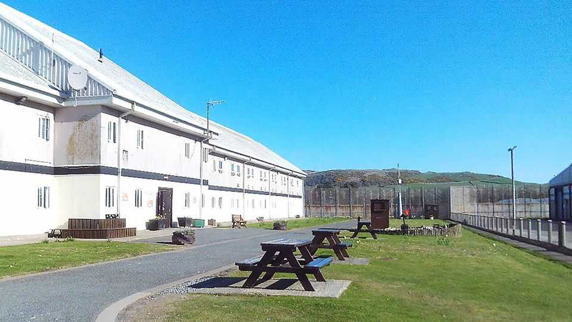

Britain’s nicest prison
And what it can teach the rest

Nov 12th 2026
Much is made of Britain’s Dickensian jails. HMP Dartmoor was opened in 1809, the year Charles Darwin was born. Just now it is temporarily closed, after high levels of radon gas were found within its walls. But with 122 prisons across England and Wales, not all are so decrepit. HMP Millsike, opened last year, is replete with solar panels and air-source heat pumps. So which is the best prison to be a prisoner in?
Judging from the Ministry of Justice’s annual performance ratings, it is Haverigg in Cumbria. Housing about 490 men, mostly sex offenders, it scored 97.5 out of 100 on its report card. Last year it recorded just four assaults on prisoners and none on staff, while 97% of inmates were signed up to activity programmes. What is more, no one escaped.
Haverigg is an “open prison”, a category that tends to outperform the rest in part because of who is sent there. Open prisons are generally reserved for low-risk offenders who are often close to the end of their sentences. As a result, they can afford prisoners a much greater degree of freedom than others. Inmates can move around the prison, and can apply for temporary licences to leave and attend medical appointments, visit family or work.
Selection bias, however, is not the whole story. Prisoners who can get to hospital under their own steam find it a great deal easier to stay on top of chronic health conditions. Those with a licence to work have a much better chance of getting a job after they are freed, which in turn makes them less likely to reoffend. Six weeks after release from an open prison, 43% of ex-inmates are employed—over double the national average. For those released from Haverigg, that rises to 58%.
Open prisons also excel at getting inmates into behavioural and education programmes (probably in part because their prisoners are already relatively well behaved). Declining access to such activity is one reason for the sense of crisis in other British prisons. Self-harm and drug use are more likely among those who feel bored and hopeless from spending 22 hours a day in a cell. Yet programmes that give them a sense of purpose are among the first things to be cut when staff are short. Their survival in open prisons suggests they could help reduce the chaos in others. In Haverigg, prisoners train to be equine therapists at an onsite racehorse rescue.
Not all prisons can be open. But those that are do pretty well at turning inmates into functioning members of society. The rest should learn from them.■